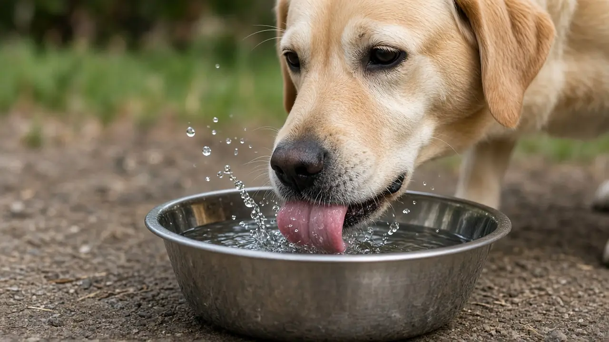

How do dogs drink water? A fast tongue pulls up a column of water
Dogs cannot suck water up the way people do, so they lap. A dog curls the tip of its tongue backward, dips it into the bowl and then whips it upward very fast. That pulls a column of water up out of the bowl, and the dog times its bite to close on the column just as it breaks off. High speed video studies also show that water clings to the surface of the tongue, and that a dog needs at least three laps to move a mouthful back to its throat.

Dogs lap with a fast upward flick
In a 2015 PNAS study, Sean Gart, Sunghwan Jung and colleagues filmed a wide range of dogs of different breeds and body sizes while they drank, and built physical experiments that copied the motion of a dog's tongue leaving the water. They found that dogs accelerate the tongue upward more quickly than cats do. That fast pull drags a column of water up out of the bowl, and the dog times its bite to coincide with the moment the column pinches off, so it catches the water before it falls back.
Why dogs are such messy drinkers
The same study explains the splashing. A dog curls its tongue backward, like a ladle facing the wrong way, and the authors found that this backward curl increases the size of the water column. That lets a dog drink more per lap than it could with a straight tongue, at the cost of water flying around the bowl.
Water sticks to the tongue, then gets trapped
A 2011 Biology Letters study by A. W. Crompton and Catherine Musinsky used high speed light video and X-ray video of drinking dogs. They reported that, like cats, dogs rely on liquid sticking to the tongue rather than simply scooping it. Water rides up on the tongue's surface as it is drawn back, and a tight contact between the tongue and the ridges on the roof of the mouth (the palatal rugae) traps the water so it does not fall out when the tongue goes out again. They found that at least three lapping cycles are needed to move liquid through a dog's mouth to the throat.
How this compares with cats
Cats were studied first. In a 2010 Science paper, Pedro Reis, Sunghwan Jung and colleagues showed that cats curl the tongue so its upper surface touches the water, then lift it rapidly so a column of liquid grows by inertia until gravity breaks it, and close their jaws to capture it. They also found lapping speed is tuned to body mass, a pattern that held from house cats to lions. Cats do this neatly with a light touch, while dogs plunge the curled tongue in and accelerate it harder, which is where the mess comes from.
What this means for owners
- Splashing is normal. It comes from the backward curl of the tongue, not bad manners. A wide, heavy bowl on a mat or an easy to wipe floor helps.
- Keep fresh water available. Refill and clean the bowl daily, and offer extra water and shade on hot days (see everyday dog care and dog health basics).
- Watch for changes. If your dog suddenly drinks much more or much less than usual, or struggles to lap, call your vet rather than guessing at the cause.
- Lapping takes a few goes. Since a mouthful needs at least three laps to reach the throat, a dog drinking for a while at the bowl is just working through that cycle.
Frequently asked questions
How do dogs drink water?
By lapping. A dog curls its tongue backward, dips it in and accelerates it upward, pulling up a column of water that it bites off just as the column breaks.
Why are dogs such messy drinkers?
A 2015 PNAS study found the backward curl of a dog's tongue increases the size of the water column, so dogs drink more per lap but splash more too.
Do dogs scoop water with their tongue?
Not mainly. X-ray video in a 2011 Biology Letters study showed water clings to the tongue surface and is trapped against ridges on the roof of the mouth, with at least three laps needed to move it to the throat.
Do dogs and cats drink the same way?
Both lap and both rely on water sticking to the tongue, but cats touch the surface lightly while dogs plunge the curled tongue in and accelerate it faster than cats do.
Sources
- Gart S, Socha JJ, Vlachos PP, Jung S (2015). Dogs lap using acceleration-driven open pumping. Proceedings of the National Academy of Sciences 112(52): 15798-15802. DOI 10.1073/pnas.1514842112, PNAS
- Crompton AW, Musinsky C (2011). How dogs lap: ingestion and intraoral transport in Canis familiaris. Biology Letters 7(6): 882-884. DOI 10.1098/rsbl.2011.0336, Biology Letters
- Reis PM, Jung S, Aristoff JM, Stocker R (2010). How cats lap: water uptake by Felis catus. Science 330(6008): 1231-1234. DOI 10.1126/science.1195421, Science
General education only, not veterinary advice. If you are worried about your dog, contact your vet; in an emergency, contact an emergency vet straight away.